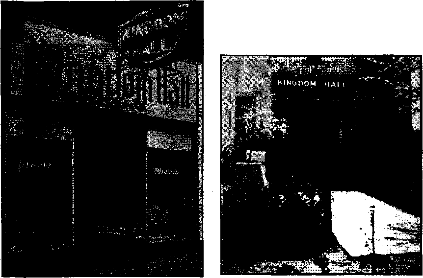

May Have Been Some Bad Politicians 4
Last Moments of French Republic
Petain Got His Power in the Dark
Bolivia, Famous for Tin and Potatoes 9
Even Moderate Smoking Is Harmful
“Thy Word Is Truth”
Spearing Souls Out of “Purgatory”
Tulsa Citizens Protest Intolerance of Public Servants
“The Land of Ten Thousand Lakes”
Presenting “This Gospel of the Kingdom” '
“An Unusual and Outstanding Gathering of
Report of the “Free Nation’s”
Published every other Wednesday by WATCHTOWER BIBLE ANO tract SOCIETY, INC, 117 Adams St.. Brooklyn 1. N. Y.. U. S. A.
OFFICERS President Secretary W. E.
Editor Clayton
N. H. Knorr Van Amburgh J. Wood worth
Five Cents a Copy 11 a year in the United States J1.26 to Canada and all other countries
NOTICE TO SUBSCRIBERS
Remittances: For your own safety, remit by postal or express money order. When coin or currency is lost in the ordinary malls, there is no redress. Remittances from countries other than those named below may be made to the Brooklyn office, but only by International postal money order.
Receipt of a new or renewal subscription will be acknowledged only when requested. Notice of Expiration is sent with the journal one month before subscription ekpires. Please renew promptly to avoid loss of copies. Send change of address direct to us rather than to the post office. Your request should reach us at least two weeks before the date of issue with which it is to take effect. Send your old as well as the new address. Copies will riot be forwarded by the post office to your new address unless extra postage Is provided by you. ' Published also in Greek, Portuguese, Spanish, and Ukrainian.
OFFICES FOR OTHER COUNTRIES
England 84 Craven Terrace, Rondon, W. 3
Australia 7 Beresford Road, Strath Heid, N. S. W. South Africa 623 Boston House, Cape Town
Mexico Calzada de Melchor Ocampo 71, Mexico, D. F. BrazIL Caixa Postal 1319. Rio de Janeiro
Argentina Calle Honduras 5646-48, Buenos Aires
wintered aa second-class matter at Brooklyn, N. Y.t
under the Act of March 3, 1879.
Is the Hierarchy Learning?
♦ Is the Roman Catholic Hierarchy learning something about how to do its work? One could almost think so, and could imagine they were taking lessons from God’s Theocratic organization, to read closely the pastoral message of “apostolic delegate” Cicognani to the Catechetical Congress held in Cincinnati. Mr. Cicognani said they would see that in every parish “all who are capable of , teaching or promoting catechetical instruction” should be kept busy. There should be “a distribution of books, pamphlets, leaflets and similar suitable material” and the work should be in the hands of “both sexes”, “all the faithful of good will.” All such are to be “ambassadors of our Lord”. In some districts “a special organization is necessary to obtain ipeans of transportation for gatherings”. It should be borne in mind that “there are some individuals who may easily, be reached by the laity but not by the clergy”, “The first Christian school for children should be their own family and home.” It is discerned that “numerous home visitors are needed to seek out the indifferent and negligent”. This kind of work Mr. Cicognani designates as “the choicest field of Catholic Action”.
Shame on Walter Clinnin!
♦ Walter Clinnin, of Chicago, should shame himself. Three crooks came to him and trustingly turned over to him $3,200 that they had collected in the “Purgatory” racket. They traded their perfectly good whisky warehouse receipts for whisky warehouse receipts that were worthless. Moreover, several more “Purgatory” crooks lost, all together, more than $15,000 by which this Clinnin bird hung up these other birds to dry in the gale. Something has got to be done to protect “Purgatory” crooks in their honest graft in whisky hereafter or Chicago will be ruined. , ■ - •
“And in His name shall the nations hope.”—Matthew 12:21, A.R.V.
Volume XXV Brooklyn, N. Y., Wednesday, November 24, 1943 Number 631
Some of France’s Betrayers
IT MUST be remembered that France is still suffering from what may be called a Napoleon hangover. Napoleon’s name and even his descendants are objects of veneration. In a letter from Paris, published in the New York Times Magazine, December 11, 1938, P. J. Philip goes into some detail on this:
To understand the situation, or rather the conception the French have of the State and its duties, one must go back to the 19th of Fructidor, 1789, when General Jourdan got the Council of Five Hundred to pass a little law making all men between 20 and 25 years old “defenseurs conscripts”, compelling them to take arms for the defense of their country. It is that little law, perpetuated throughout every regime ever since, which has made France different from other “democracies”, however much the French may seek to conceal or to justify the difference.
That was the law which began the gradual conversion of France into a collectivist State. In return for military service the citizenry began to demand more and more from the government until even those governments and parties which were the declared opponents of socialism were compelled to join the procession, so that now the State seems to control and direct everything from the election of an academician and a schoolmaster to the railroads, the highways, the telegraphs and telephones, the manufacture of Sevres pottery, the opera and some theaters, museums and art galleries. Add to this list huge forests, the manufacture of matches and tobacco, the refinement of oil, the Bank of France, potash mines in Alsace, coal mines in Flanders, steamship companies and mineral springs like those of Vichy.
There is scarcely anything in which the State does not take a hand, and that, in the opinion of those opposed to such laws as the forty-hour week, is the source of the present difficulty. State intervention, it is argued, has killed private initiative; it has killed the desire of the capitalist to risk his capital in enterprise.
State intervention, too, runs the argument, has killed the desire of the workman to work and save. He has derived from his experience as a soldierr—and, of course, the demands, of the war veterans are cited in this connection —the feeling that * the State owes him his livelihood. He obtained from the Blum government the forty-hour week and paid vacations. In themselves these improvements in the workers’ lot in many industries are conceded to have been legitimate and beneficial. But it is contended that they spread the conception that the individual could “take things easy” and the State would provide.
Of course, Mr. Philip is connected with and writing for America’s most outstanding representative of Big Business and writes accordingly. But he is one of the best-posted men in the world on everything French.
About the state’s having a lot to say about everything in France, it is noteworthy that in a single month 13,465 persons were punished for hindering the radio reception of their neighbors by maintaining radio howling. Has anybody ever heard that anyone at all has been . arrested for that common offense in the United States?
It is interesting to an American to learn that since January 1,1940, there is a bonus for babies in France; that is, if their parents are not Jews. If a couple produce one child each year for five years they get a premium of 11,620 francs; if they produce five children in seven and a half years they get a bonus of 5,616 francs. The franc is worth 2c; so the premium is $232.40 in the first case, and $112.32 in the second. And it doesn’t seem too much.
French soldiers are not overpaid. They used to get 14c a day. Six years ’ago this was doubled. And the 3c doesn’t seem like too much money for a day’s work either.
Many of the French generals have learned well the lesson that the army should be used, not for the protection of the French Republic and the French people, but for the protection of the clerics, the monarchists and the big business crowd that, as admitted, have as a main objective the overthrow of the republic. The brilliant and liberal writer Genevieve Tabouis (New York Times, March 9, 1942) •
quotes an Englishman who later became a member of the British Cabinet and who told her that while at lunch in a very aristocratic house in Paris he had heard two French generals seriously discussing whether it would not be better for France to be “beaten by Hitler than rescued by Stalin”. The Englishman said that no one at the table seemed in the least put out by this conversation, and added the understatement that it seemed to . him that this indifference might augur badly for the future. To the very week when Mussolini stabbed France in the back the wife of his ambassador, Mme. Cerutti, was exclaiming over teacups: “But, my dear Duchess, if yoti only knew what a wonderful thing fascism is! With fascism the aristocracy is saved!”
The simple-hearted citizens that have lived in the pure atmosphere of Detroit, St.. Paul, Philadelphia, Chicago, and a few more points north, south, east and west (not to mention New York in bygone years), will be grieved to learn that some of the politicians in France are as bad as those nearer home. Such should be measurably comforted by the following dispatch sent in from Paris, September 5, 1934, which explains why, during prohibition days, there was such a neverending flood of liquid refreshment that seemed to come from the French islands St. Pierre and Miquelon, up in the Gulf of St. Lawrence, and to find its* way without any serious delay into every part of the United States.
A postmaster who confessed that he was a weekly purchaser of such goods admitted to the writer that the truck driver had told him it cost $100 to get each load off the dock, $100 more to get through Hoboken or Jersey City, and $100 more to get out of the state of “New Hague”. But read the story, so that if prohibition ever comes again you wifi know the orthodox method of procedure :
Another great war mystery was solved today when the whereabouts of the almost mythical stock of United States rye whisky, sent over at the end of the war to cheer up the soldiers, was located in a vast tank near Bordeaux.
There lie 100,000 gallons of the shipment that started across the ocean in 1918 as Glen-brook Kentucky rye, 104 proof. It probably will soon be nothing but a memory here, for it will be sold in England, Scotland and the United States, according to present plans.
For the history of this liquor, which never touched the lips of an American soldier, one has to rely upon Victor Gaillard, wealthy Frenchman, who bought it from the French government as an investment and Edward Pileer, his American agent. Documentary proof is lacking but the whisky is there and even American official sources admit the plausibility of the tale.
It was shipped over by the Red Cross and, not being for sale, no record of its export was kept. It was landed in barrels at Havre, where it stayed until the French government acquired it as part of the war stocks and until M. Gaillard bought it from the government.
He has proof that he got it from the government, but there are no customs records covering its entry. M. Gaillard emptied the whisky from the barrels into the tank and sold the barrels, so another possibility of proving the original source was destroyed.
The French are not whisky-dr inkers; so, with prohibition in the United States, only American bootleggers came into the market for choice ryes. They approached M. Gaillard frequently, according to M. Pilcer, but the Frenchman refused to deal with such purchasers and none of the stock was sold.
When prohibition ended the United States again came into the market for its own product and it would have found its way back long ago duty-free if there were proof that it had been shipped from the United States. Washington now is asking for affidavits showing its history, but that is proving difficult.
The owner feels the United States government will soon recognize his claims. When that is^done the first available ship to the United States will be loaded dowm with Kentucky rye.
One shouldn’t get the idea that it is only in the present that there have been bad politicians and even bad kings and (s-sh!) once in a while a queen that was not 100-perccnt correct in her decorum. Thus, it now seems well established that Anne of Austria, while she was the wife of Louis XIII, was the mamma of a boy whose papa was not the king, but a courtier, (Jeorge Villiers, first duke of Buckingham. This boy’s younger brother became Louis XIV of France, and the two boys looked so much alike that to save the queen’s name, and preserve the odor of sanctity in the royal palace, the first child was imprisoned in the dungeons of the Bastilc (the imperial doghouse) under the name of “Le Sieur Montaigne”, where he lived with an iron mask over his features for forty years "to die at last without a murmur, without a harsh word for his inhuman tormentors”. The facts were finally brought to light by a member of the Paris detective force who was permitted to study all documents on the subject in the secret archives of the French police, about a dozen years ago.
Though most people knew' that the Big Business crowd of France supplied war munitions for the German army throughout the entire war of 1914-1918 (by routing the merchandise around through Switzerland), it was not until the spring of 1936 that the voters of France awoke to the fact that the von Wendels or De Wendels (the name of the head of this family changes according to whether his principal plants chance for the moment to be in Germany or in France) wrere up to their old tricks and were doing everything in their power to rearm Germany, so that there could be another world w'ar. The munition peddlers know on w'hich side their bread is buttered. They regard peace as humanity’s worst ene* my; in which case they think of themselves, their families and their sons-in-lawy and daughters-in-law as humanity.
Not wishing to die for the von Wendels or De Wendels, and thinking (incorrectly as it turned out) that they could stop the Clericai-Royalist-Big Business plan for rearming Hitler and destroying the . last great republic in Europe (barring "Russia), the French voters decided to vote the w'ould-be destroyers of the French Republic out of pov/er and give the Socialists a trial, -with Leon Blum as the premier. Tt worked, 'and on June 2, 1936, the new party went into power and straightway started to try to get rid of the 200 dictators that till then had been running the Bank of France and so running France itself. The elec-; tion posters of the time showed Hitler carrying a dagger in his mouth and on the dagger itself w7ere the words "Steel by de Wendel, Krupp and Co.” ;
Though the Bank of France had 40,000 shareholders, only the 200 richest fami- ; lies of France might have the right to, control the bank’s policy and the finances £ of the government, In trying to dorBeet? this matter Premier Blum was playing with dynamite, and knew it very well. In a year the shares of the bank went from 10,800 francs to 5,250 francs. The press lined up with its owners, which, of course, were the 200 families. But Blum went ahead and in the first nine months of his premiership the government seized the Schneider arms factory, the largest plant in France and one of the most important in Europe. A cash indemnity was paid the Schneider company.
, The big newspaper Echo de Paris (representing the army and church interests aiming at the overthrow of the Republic) and other big papers had .a serious falling off in circulation and in revenue, and serious editorial resignations and splits. But the Big Business crowds won in the end, and the war was pulled off as planned. The nationalization of the French arms factories resulted in tripled production during the eight months of the war with Germany, but the Big Business crowd sabotaged the manufacturing plan until it was too late, and, as they had the Bank of France, the other, big banks, and most of the railroads and allied industries in their hands, the friends of the French Republic stood no chance.
Commenting on this situation Paul V. McNutt, who stands very high in the administration at Washington, said in an address to the graduating class of a Washington college:
The products (which went into the Maginot Line) had been sold to an aging general staff by the corrupt French Steel Trust and the Cement Trust. French generals became smug in the knowledge they could win “the last war”—on paper. French society, military and civil alike, atrophied comfortably in “security”. '
The very plants that the Big Business Clerical crowd slowed down so that the French Republic might be overthrown are now working day and night to help Hitler re-establish in Europe the accursed “Holy” Roman Empire. And the stuff now being made in 'thmie plants is being used to kill Britons, Americans, Russians, Chinese, and other advocates of the four freedoms envisaged and encouraged in the Atlantic Charter and hated and worked against either openly or secretly by the Roman Catholic Hierarchy in every corner of the world.
Last Moments of French Republic
Some have wondered how the aged Petain so suddenly became dictator of France. It is a story to make one’s flesh creep, well told by the famous writer Frederick L. Collins in Liberty magazine, November 23,1940. Only the barest outline is here presented. The Blum ministry is out and the Reynaud ministry is in, and Reynaud is a complete captive, not to his own wife, but to another woman, beautiful, brilliant, wealthy, a representative of the 200 families determined to destroy the French Republic. At four o’clock in the morning of a day in May, 1940, in the palace of the premier of France, Reynaud and this woman were awakened by the jangling of the telephone.
General Gamelin was on the wire, to tell that the Germans had broken through at Laon and that two motorized divisions were marching on Paris. Reynaud was getting old; his enchantress was forty. In her presence, at such an hour, “Reynaud .must have had recourse to certain unaccustomed stimulants.” When he should have been at his mental best he was at his mental worst; but let Mr. Collins, who claims that France was ruined at that very hour, tell the gist of the tale in his own words:
It reveals a sordid, sex-ridden situation in high political places which, aside from every other factor, foredoomed the nation to disaster. But, in fairness, one fact should be kept in the forefront of our minds as we attempt to understand what would otherwise be, to us, incomprehensible: the American conception of sexual morality is one thing; the French conception—indeed the whole Continental European conception—is another!
Paul Reynaud, in allowing himself to fall into the meshes of a beautiful woman not his wife, was doing only that which the average Frenchman regards as the accepted order of the day, or night. The fact that this particular beautiful woman developed with the years into a scheming, overambitious intrigante who came between him and his friends, and finally between him and his country, was his hard luck and the world’s. The fact that he allowed himself to be dominated in matters of vital importance by the woman with whom he had thus become involved was a sign of unforgivable weakness.
The dame with whom Reynaud was spending the, night rushed to the telephone, and all the 200 families and the Clericals, working together for the destruction of the French Republic, knew that the day had dawned which in their hearts they really wanted. Says Collins:
I talked with one of those who received her hysterical warnings. She seemed possessed, my informant told me, with but a single thought, and we now know that, in those small hours of that morning, she had already urged that thought on Paul Reynaud: that there was no hope except in flight. We know, too, that the campaign begun that morning in that boudoir never ceased until her dead body lay mutilated almost beyond recognition on a mountain roadside near Bordeaux and the scarcely living body of Paul Reynaud— together with his predecessors, Leon Blum and Edouard Daladier, and his friend and ally Georges Mandel—was incarcerated by Hitler’s orders in the prison chateau of Chazeron.
The student of history will sometime see how peculiarly appropriate it was that at this time, when the French government needed an odor of sanctity, it should remember that it had Petain. The way it was put (London Sunday Express, June 30, 1940) by George Slo-combe, the last British journalist to leave France, was:
A whole nation found itself listening and waiting for the government, as it moved from one secret headquarters to another, to tell the country the truth. The government changed [just the chance the Jesuits had been hoping for and planning for] mysteriously and apparently without reason. Daladier gave way to Paul Reynaud. Paul Reynaud was replaced by Petain. The decision to defend Paris street by street was revoked, and Paris was abandoned to the Germans. Town after town was abandoned without fighting, and finally the whole country was abandoned. Marshal Petain, eighty-four years old [and so safe from Reynaud’s fate], a valiant old fossil, “a resurrected corpse,” as the German broadcasters cynically described him, tried to save the army by sacrificing the nation, although Hindenburg in 1918 had only sacrificed the Kaiser,
Petain had been trained for this very place. Described by the Columbia Broadcasting Company’s correspondent in France as “almost a fanatical Catholic” (The Register, a Roman Catholic periodical, August 4, 1940), he was selected at the age of 82 to be the ambassador of the French Republic to Franco the Butcher, dictator of Spain. Henry Noble Hall, formerly first secretary of the British Embassy in Paris, says (New York World-Telegram, May 19, 1941):
Naturally the totalitarian government of Franco appealed to him.
On June 17, 1940, Reynaud resigned from the cabinet and Marshal Petain, then 84 years of age, was suddenly catapulted into power. Just how it was done remains obscure. Obviously he was supposed to represent the French Republic. Actually he did nothing of the kind. The headlines in the New York Times, July 4, 1940, after Petain and all the other haters of democracy were gathered at Vichy to do the will of Hitler and the Jesuits, were.: '
France Is Writing End to Democracy; New Constitution Is Proposed to Give Authoritative Rule to Petain’s Regime; Cuts Parliament Powers; National Assembly Is
Expected to Meet Soon and Pass on Change in Policies.
It is characteristic of those that conspire to take away the liberties of the people that their deeds are done in the dark; and so one can read with understanding and appreciation the statements of P. J. Philip, former French correspondent of the New York Times (Monday, October 14, 1940), when he says:
It was in these circumstances that the Petain-Laval government came into existence —overnight, in the dark, while the country as a whole, even those millions in Hight, had no idea that the end was so near and still believed that resistance and even victory were possible. It was with a sense of amazed bewilderment that both the army and the population in flight learned by radio that M. Reynaud had resigned and that Marshal Petain, with M. Laval as his first minister, had formed a cabinet and was asking for an armistice.
It is arguable that at least 80 percent of the people of France did not know and would not have approved of what was done so hurriedly and in some ways secretly at that time. The Senate and Chamber of Deputies meeting in National Assembly gave the PetainLaval government legal being in a mood that resembled that of the firemen from the Paris suburbs who ran away with their families on their fire engines instead of remaining to do their duty and protect the citizenry. Democracy, as it had been practiced in France, collapsed without a struggle.
How strange that in its darkest hour the French Republic should fall into the hands of a militarist who hated it, and one so completely infatuated with the Roman Catholic Hierarchy as to make its slightest wish the principal objective of his life. Such is Marshal Petain, the man who, without a shadow of right to do so, subsequently ordered, ruled and decreed the French Republic and its parliament out of existence.
The inspiration for the death of the French Republic came from Petain’s mentors, the Roman Catholic Hierarchy. It was, accordingly, appropriate that the occasion should be marked by one of the so-called "colorful ceremonies” in which the Hierarchy delights to indulge. In her book War Is People, Lorna Linds-ley gives us the following description of the significant ceremony of which she was an eyewitness:
/It nine o'clock I went to the [Bordeaux] cathedral, where a requiem mass was to be held. The crown! . . . overflow-ed into the square outside the big western doors, which were wide open; inside, the cathedral was packed and silent. . . .
Tn the choir before the altar stood a high bier draped in black. Four huge candlesticks with lighted candles flanked it, and the empty coffin on the bier was covered with the Tricolor. Around the choir stood the men who were all that was left of the Government of France. There were some senators and deputies and a sprinkling of military and naval uniforms. The president, M. Lebrun, was there, and Messrs. Frossard, Chautemps, Marquet and Laval. Marshal Petain and General Weygand were received at the main door by the bishop of Bordeaux, and walked up the aisle with him. The choir sang Dies Irae and the bell of the cathedral tolled the knell. . . .
When the mass ended the absolution was given, the two old soldiers, Petain and Weygand, who had asked for the armistice, stepped up and stood at attention before the catafalque. An altar boy snuffed out the candles, the Tricolor was folded and withdrawn.
And so the republic of France came to an end, with benefit of clergy. "The colorful ceremony” was, as it were, a final ■ ironic flaunting of the perfidy of the betrayers over the remains of the victim. “Requiescat in pace.” France had been, in a manner ef speaking, a Catholic republic, as far as such an anomaly is possible. But there are still ominous sounds heard in the burial chamber.
TWO of earth’s most useful products are tin and potatoes. Hardly a meal is eaten that does not have potatoes or tin connected with it in some form or another; and Bolivia has them both. Indeed, though earth has other deposits of tin, yet Bolivia, it is claimed, is the natural habitat of the potato, and from there, in some 200 varieties, it has spread to earth’s remotest bounds. And as to the tin, in a land of 3,426,296 population, it is calculated that about one-third make a living in the tin-mining business. Sometimes it isn’t much of a living. The wages get down to as low as 10c a day; and one can’t do much on 10c, now can one? As recently as December, 1942, Vicente Lombardo Toledano, president of the Latin-American Workers Confederation, stated that laborers were working in mines 4,000 feet above sea level, shoeless and without gloves or helmets for protection. They wanted 20c a day, a 100-percent increase. Just imagine it! This, led the minister of the interior to state that he had discovered a subversive plot to promote strikes and overthrow the government! Tin comprises 90 percent of the country’s exports.
The area of Bolivia, since the territorial dispute with Paraguay was settled, has been fixed at 537,793 square miles, more than half of which consists of low plains, including extensive swamps, while the remainder is a lofty plateau between two mountain ranges; and this highly elevated part is the real Bolivia.
The national language is Spanish, but more than half of the population speak one or another of the Indian dialects and do not know Spanish.
The boliviano, worth about four American cents, is the unit of currency. The governmental budget in recent years has been around 75(1,000,000 of these little bolivianos, equaling about $30,000,000.
Bolivia is landlocked. Imports and exports have to go through Chile, Peru or Argentina. The exports in 1941 were valued at 205,654,833 bolivianos, or about $8,000,000, and consisted almost entirely of tin, tungsten and other metals,
Bolivia’s production of gold is around half a million dollars’ worth a year, but under the Spanish rule (1540 to 1750) the mines yielded gold valued at $2,000,-000,000.
There is compulsory military service in Bolivia for men from 19 to 50 years of age, and also “pre-military” instruction for boys from 12 to 19 and girls from 15 to 20.
The white populations, about 400,000, arc descended in the main from the early Spanish adventurers. They are the landowners, the government officials and the professional part of the population. The mestizos constitute the tradesmen, minor civil servants and skilled workers. The Indians are the laborers, and are suspicious of the whites. Those who live in the deep forests have little contact with the whites.
The mean temperature of Bolivia is 49 degrees, and that is “mean”, and no mistake. Water freezes every night at Alto Curcero, while at noon the sun is so hot as to blister the skin. The reason is that most of the country lies at an altitude of 12,000 feet, and when one is two mile:- up in the sky it gets chilly at night. There are three railroads up into this land of the Andes. They head for La Paz, the capital, and most of their way is over a land of desolation. Vegetation does not do well in alternate heat and frost, but potatoes do. Most strangers suffer from soroche, or mountain sickness, on account of the extra strain put upon the heart. The cities are quiet. The people talk little, and then mostly in undertones. The useful llama has no voice except a low moan. The favorite music is the dirge, and that is a rarity.
NOVEMBER 24, 1943
In other words, the people are short of breath and husband it. Strangers find it hard to sleep.
There are other interesting features peculiarly Bolivian. Lake Titicaca, on the border between Peru and Bolivia, but situated mostly in Bolivia, is 12,500 feet above sea level, and is the highest steam-navigated lake in the world. Tt is of almost the size of Connecticut, being 75 miles wide and 125 miles long. Wood on its shores is so scarce that masts for boats are made by splicing small sticks together. Potatoes, Parley and a few other crops can be grown. Herds of alpacas graze near the lake. The snowclad summits of the Andes are all about. On a night in August the temperature on the lake fell to 15 degrees above zero, a terrific wind blew up, and a sloop was overturned a mile from shore. Few of the 18 passengers survived the terrible exposure.
Some years ago the government sought to compel the Indian inhabitants of the capital to abandon their bright-colored shirts, odd little hats, knitted helmets that come down over the ears, and be humdrum like Europeans and North Americans. More than half the population are Indians. They did not relish the new law, and it never went into effect. So La Paz today is as gaudy as ever. It is claimed that there is not so much color anywhere on earth as in the Sunday open-air market in La Paz. In the women’s skirts, none of the primary colors are ever omitted. So, if Bolivia does not do much to stir up the ears, it certainly does do something to stir up the eyes.
La Paz is the loftiest capital in the world. Not all of the diplomats can stand it to live 12,500 feet above sea level. In the Coolidge administration David E. Kaufman, the then U. S. minister there, found the people quiet and peaceable, but he suffered so from loss of sleep, and lost so much weight, that he felt unable to retain his post.
La Paz is a city of great charm. It lies in the heart of a gigantic canyon about three miles wide, ten miles long and 1,500 feet deep, framed in the highest Andean peaks. On occasion, the storms that raged in the near-by mountain areas have caused Hoods in La Paz that have taken lives, and caused houses to cave in.
There are frequently terrific downpours in the central section of the country; and several of the most important rivers that make up the Amazon system have their rise in Bolivia. At Oruro, Huanuni, Biveralta and Beni many valuable buildings have collapsed in Hoods and many lives have been lost. At such times the wild inhabitants of the Amazonian jungles, both savage Indians and beasts, seek the drier lands on which the white men have built their cities, and man-eating panthers and jaguars have sometimes been shot in the streets. Santa Barbara, located on a promontory 400 feet from the river Choqueyapu, has the Uneasy habit in a great storm of resuming its slide toward the river. Underground waters are the direct cause.
Though famed for their condors, eagles, ostriches, vultures and storks, Bolivia’s forests in the Amazonian areas are also the home of the useful llama and alpaca. Underfoot lurks the bushmaster, a deadly member of -the rattlesnake family, undistinguishable from the carpet of dead leaves.
It is no disgrace to the people of Bolivia, half of whom are Indians, and half of the remainder of mixed blood, that the percentage of illiteracy is still high, despite the fact that primary education is now free and compulsory. The little folks there are in love with their teachers, the same as elsewhere, and on one occasion those in the secondary schools of La Paz served notice on the government that if their teachers who had been without their salaries for two months were not paid within five days they would go on strike. At that time the president of the country acceded to the students’ demands, despite the fact that the country was at the moment undergoing a fiscal stringency.
The government had to take a more stern position when the telegraphers of the postal'' service went on strike. It declared what is generally held elsewhere that it could not legally recognize the right of government employees to strike. Some years ago the Bolivian Congress decided that its members, instead of receiving monthly salaries throughout the year, as they had done previously, would pay themselves only for each day that they worked. That seems like a pretty high standard, don’t you think?
Roman Catholic is the recognized state religion, but other forms of worship are permitted. There is compulsory religious instruction in all public and private schools of Bolivia except those run by religious organizations.
In 1931 the native Catholic priests, dissatisfied because favoritism was shown to foreign-born church representatives, were back of a motion in the Chamber of Deputies to separate the church and the state, but the only known result is that a bill was also introduced prohibiting all secret societies. There was a beautiful row. A committee of the Congress declared that church dignitaries “through the confessional often possess state secrets whose revelation would endanger the republic” (New York Times, March 22, 1931). “It is further pointed out that the failure of foreign priests to learn the native dialects results in hardships, particularly among the Indians, who are forced to make confession through interpreters. Finally, it is alleged that the foreign clergy are prone to 'export Church revenues’ without making adequate provision for the maintenance of the churches in Bolivia and that the development of a national clergy is thus neglected.”
Four years later, and as a natural result, the Bolivians were said to be leaving the Roman church in great numbers. Even at the time, the wireless to the New York Times stated that “Press comment is divided, but public opinion appears to favor the anti-clericals”.
The Catholic Maryknoll institution of New York is sending missioners into Bolivia j indicating, in its effort to keep missioners of other denominations away, that this South American country is not as Catholic as the Hierarchy would have one believe.
One of the American priests, assigned to Provenir, tells the following story of an incident in connection with a “Christmas” celebration held in tropical heat:
The clothes for the Infant were the occasion of an argument. I, of course, am not an expert with a needle; my skill stops at buttons. But I have my own ideas, and I think that the Christ Child should be “wrapped in swaddling clothes,” just as the Scripture says. But the seamstress thought differently. She made a beautiful white dress with all the accouterments to match it. The Babe of Bethlehem was very well dressed. “It is lovely,” I said. “But God was not dressed that way. He had only some swaddling clothes.” "But these clothes will do much better!” she explained. “When He grows up, He will remember and be glad. Bight now He does not know the difference—He is only a Nino.”
So much for instruction in Catholicism. The “Baby God” wore the white dress, and that w’as that. More missioners are needed “south of the border”, according to Maryknoll. We read:
“If you can’t go along with us [to South America], will you go 'part way? How? By providing any part (large or small!) of the $500 each of us must have for fare and equipment. Even though we may be on the way when you read this, please send along your gift to Maryknoll, anyhow. Headquarters has to find $500 for each of 100 of us being sent
to ‘all points south’. That means a total of $50,GOO, you know. Will you? Thanks!” Also:
Crucifixes, dozens of them, are needed for Maryknoll houses and chapels. They cost $5.00 each. . . . Mission sick-call equipments needed for Bolivia, $25 each.
The Most Important Industry
The most important industry of Bolivia is mining. There are large deposits of tin, silver, copper, lead, zinc, antimony, bismuth, wolfram, gold, and borate, of lime. More than 15 percent of the world’s output of tin is produced in Bolivia. The country ranks second to China in the mining of antimony, and third in tungsten. The petroleum industry is growing. Ninety-eight percent of the exports consist of tin, tungsten, and other metals.
Besides potatoes, the country produces cacao, coffee, barley, coca, highland rice, rubber, and cinchona bark. It is the second rubber exporting country of South America. Patino, king of the tin business, is said to be one of the ten wealthiest men in the world. Thirty years ago he was a grocer and got his start by grubstaking a prospector. One wonders, if he is really No. 10 in the list of the world’s wealthiest men, whether he would not be just as happy if he had paid some of the poor Indians that 20c a day they wanted, in lieu of the 10c a day which they are said to have received. On occasion the miners have been hungry and attacked the company stores to obtain food. They did that at Oruro; troops were called to restore order, and several casualties resulted. Maybe some of the lOc-a-day miners tried to take home some food to their starving wives and babies. Men do such things, sometimes.
Communism has been outlawed in Bolivia, and all Communist activities have been stopped. Before the last German minister, Ernst Wendler, was run out of the country one of the letters to him was intercepted, in which he was
12
told of “maps showing the most favorable sites for ' landing”, and showed otherwise that his heart was with Pacelli, Hitler and Mussolini,, “for the realization of our plan,” “when we assume power.” If you are going to grab a world, it is mice to have plans all made as to what you intend to do in each and every country. But sometimes there is a slip-up in the plans.
Bolivia has had a century-old conflict or dispute with Paraguay over the Gran Chaco, the interior plain between the two countries north of the Pilcomayo river and west of the Paraguay. The munition makers made a lot of money out of this, and, in 1934, were making sales to both sides at the rate of $7 a minute.
The gist of the situation is that Bolivia has no seaport and exports and imports must travel through Arica, Mollendo, Antofagasta and La Quiaca, and if she could just get undisputed possession of the Gran Chaco she could use the bosom of the Paraguay river to bear her products to the world; but the Paraguayans, though only a third as many in number, want both shores of the river, and, as they are among the world’s snappiest fighters, they have just resisted every attempt to make them let go.
When the war of 1934 flared up, the headlines in the New York Times (September 4) were “Chaco War Nears Standard Oil Area; Paraguayan Drive on Villa Montes Beaches Vicinity of American Leases; Barrier to Peace Seen; Asuncion Said to Be Determined to Obtain Possession of Potentially Rich -Fields.” And the first paragraph of the story contained a Washington dispatch reading:
Concessions of the Standard Oil Company (N. J.) are imperiled by the Paraguayan advance into the Chaco, which has brought the fighting in recent weeks into oil territory and imperiled the Bolivian position, according to word received by the State Department but not made public.
CONSOLATION
Maybe one reason for the munition makers’ prosperity at that time was that they had been well oiled.
The Gran Chaco is 100.000 square miles of undulating grazing land, marsh and thick timber, sparsely settled, and the habitat of many uncivilized Indians. Virtually unexplored jungle at present, it is considered one of the richest potential orchards in the world. The Bolivians know’ so little of what it contains, or how to get about in it, that in one of their wars for it, forty years ago, one of their armies got lost, invaded Brazil by mistake, and was sent home around Cape Horn. The name “Gran Chaco” means “hunting-ground”. When the most recent war started, the ar^a was physically about equally divided between Bolivia and Paraguay.
Sweet water is, as yet, extremely scarce in the Chaco. The area next to the Pilcomayo river has been described as “a bog with as much movement as an unsqueezed sponge”. The wmrst insects are ihenni, vicious black Ilies that hang in dark clouds in the air. There are also poisonous snakes, jaguars, and,piranhas (carnivorous fish). Water holes are 15 to 40 miles apart. On one occasion the Paraguayan troops found the bodies of 100 soldiers of tin; Bolivian Infantry who had died of thirst in the jungle. Eighty percent of the Bolivian deaths in the Chaco were due to sickness. The mountaineers could not endure the jungles and swamps.
One of Bolivia’s most capable statesmen, Dr, Daniel S. Bustamante, onetime Bolivian minister of foreign affairs, had and still has a sensible way of settling the real troubles between Bolivia and Paraguay. Bead what he said and see how’ reasonable it all is:
Bolivia will never sign a treaty which implies her retirement from the Paraguay river, because that would be equivalent to cutting off her own head and proving her absolute incapacity to uphold her rights or understand her own destiny. Paraguay, by a strange paradox, is the one country w’hic.h should, have the most interest in arriving at an arrangement w’ith Bolivia, because the enormous territorial wealth of Eastern Bolivia lies intact and sterile for want of a railroad or eana.ls to carry it to the Paraguay river.
A great canal from the River Grande or Guapay to the Paraguay through the bed of the Otuquis and another through the centre of the Chaco to the south of the twentieth parallel are undertakings Which are not beyond the economic capacity of my country, and these canals would be more fruitful than all the wars that Bolivia might win in all directions of the compass. And Paraguay ■ would be the country which would profit most from the traffic in these imponderable riches of Eastern Bolivia, because, like Buenos Aires today, it would see an enormous commerce built up on its shores. Argentina’s production comes not from Buenos Aires, and the wealth which sustains this magnificent city docs not spring up within the city, but is that which washes about its feet and touches it'as it moves in transit to the docks.
Tt was difficult to make some of the Bolivian Indians, accustomed to live 2| miles u£ in the sky, and -who, in some instances, believe in settling their differences with slings, get civilized and go down into the swamps and fight their fellow men with machine guns. Some, from the Amazon region, had to travel 1,100 miles to get to the Chaco; it took them 73 days, and they7 had to sustain temperatures of 104 degrees Fahrenheit in the shade and from that down to 5 degrees below zero. At El Condor en route they7 passed the highest inhabited point in the world, at 13,260 feet.
. At Tiahuacano 5,000 Indians not enthusiastic about going to the war in the Chaco attacked the locomotive of a troop train, but the civilized men with the airplanes came down on them out of the skies and the Indians fled in terror into the hills. In a village not far from Da Paz the Indians killed and ate the recruiting officers sent to take them to the Chaco. This was very irregular, and it shows that these particular Indians were not civilized at all. You can't do that to a recruiting officer. Pacifists in La Paz were court-martialed and shot.
The Bolivians had 3,000,000 population, and Paraguay had 800,000. The Bolivians had tanks, artillery, machine guns and trench mortars. The tanks proved useless in the swamps. The Paraguayans took the Bolivians’ machine guns at night, and so with the trench mortars. The artillery was of no good in the woods. The air was thick with heat and disease. The Paraguayans could stand it and the Bolivians couldn’t. And so they lost the war for the Chaco once more. 100,000 men died all in vain. The war ended in an armistice.
When the war was over, General Esti-garribia, of Paraguay, did the handsome thing. He presented his own pistol to General Penaranda, of Bolivia. Pena-randa is now the president of Bolivia, and was recently on a visit to the United States. The president who preceded him committed suicide, which is quite unusual for a man in such a high office. Though his father -was a German, yet German Busch, the dead president, was a real Bolivian, and resented being called a totalitarian. At one time Ernst Roehm, personal friend of Adolf Hitler, and murdered by Hitler’s own hand (so it is supposed), was a highly placed officer in the Bolivian army. Bolivia went bankrupt a’s a result of the Chaco war.
Relations between Bolivia and the United States are so good that many Bolivians are to this day wearing garments once worn by American soldiers, and with even the United States military buttons still on the coats. The explanation is that the United States sold the suits for such little sums that it could not afford to take the time to cut off the buttons.
When the time came for settling the 14
Chaco war, the United States Supreme Court was invited to name a jurist who would help arrive at a fair settlement of the dispute.
The United States has contracted to buy all Bolivia’s copper and all her rubber. And the United States has a big interest in buying Bolivia’s tin and tungsten and in facilitating their production.
Only three days after Pearl Harbor Bolivia declared war on Japan.
A project is under way to build a $33,000,000, 400-mile railway through the heart of Bolivia, from Cochabamba, in the west, 10,000 feet above sea level, to Santa Cruz, on the eastern tropical plain, 8,000 feet lower down. Uncle Sam is allotting a portion of the funds needed. It is possible that instead of building a railroad, a high-class motor road will be built instead. The highway is considered vital to the interests of Bolivia, for both political and economic reasons.
By the constitution (1938) Hie president. of Bolivia is elected for four years' by direct popular vote. He is not eligible for re-election until four years after his term has ended. All men over twenty-one who can read and write have the vote. Congress is composed of a Senate of 27 members, elected for six years, and a House of Deputies of 110, elected police or carabineros.
Common Sense in Georgia
♦ The Georgia legislature passed a law making it a capital crime to handle poisonous snakes at a religious ceremony, provided such handling results in a fatality, and with one to twenty years penalty even if no fatalities take place. All persons have a right to know that the passage Mark 16: 9-20, containing the snake test, is found in none of the oldest manuscripts of the Bible and is certainly no part of Holy Writ. The handling of the snakes is demonism, religion; opposed to every precept of the Scriptures, which are reasonable and consistent throughout.
CONSOLATION
EVEN if you smoke moderately, you have, much less chance of reaching 60 than if you didn’t smoke at all. It’s a slow count, but it gets you finally. The cause of most of the trouble is, of course, nicotine. No one has ever denied that nicotine is poison. Taken clear, it is as quick-acting and fatal as prussic acid. A drop of it on a shaved rabbit causes immediate convulsions and death. The nicotine dissolved out of a few cigarettes and placed on the tongue of a grown man would kill him in 15 minutes. Luckily the bulk of the nicotine in tobacco is volatilized in smoke; you do not get the poison straight. But if you smoke a pack a day, you inhale 400 milligrams of it a week. That much in a single dose would kill you as quick as a bullet.
This powerful poison is the source of all the “pleasure” derived from smoking. It touches off the mechanism, by which the adrenal glands < release quick energy from the liver and muscles. You do get a “lift” when you light a cigarette. But it’s exactly like the lift you get from cocaine, heroin, marijuana. All these things can stimulate the adrenals, cause a momentary increase of sugar in the blood. Under the flogging of the nicotine whip, the body burns up sugar faster; heart action, respiration and blood pressure are kept at a ding-dong pitch.
Nicotine also causes undue amounts of hydrochloric acid to pour into the stomach. Heartburn, indigestion and “acid” conditions are directly traceable to excessive smoking, and an almost certain way of getting stomach ulcers is to smoke regularly on an empty stomach.
But nicotine isn’t the only toxic substance found in tobacco. When you inhale, you take carbon monoxide, ammonia, carbolic acid, pyridine and a host of tarry substances into your lungs, and through them into your blood stream. Carbon monoxide causes headaches; am-NOVEMBER 24, 1943 monia irritates your nose and throat. Pyridine is a powerful irritant of the bronchial tubes. The tarry substances coat your tongue, blacken your teeth, and are thought to play an important part in causing mouth and tongue cancer, found oftenest among heavy smokers. Arsenic, sprayed on tobacco plants to kill insects, remains in the processed tobacco in measurable quantity. The scorching heat of the smoke itself, reaching 140 degrees as your cigarette burns down toward the end, sears the mucous membrane of nose, throat and lungs, reducing your resistance to colds and . other respiratory diseases.
To me the ugliest of advertising is that which features soldiers or sailors smoking cigarettes. As director of the Navy’s Physical Fitness Program, I can bluntly say that few things could be worse for physical fitness than promoting the cigarette habit.
The late Knute Kockne, Notre Dame’s wonder coach, said: “Tobacco slows up reflexes, lowers morale; any advertising that says smoking helps an athlete is a falsehood and a fraud.” William Muldoon, famous conditioner of men, considered nicotine the greatest harm to health in the modern world. Ty Cobb, the famous Georgia Peach of baseball, says: “Cigarette smoking stupifies the brain, saps vitality, undermines health and weakens moral fiber. No one who hopes to be successful in any line can afford to contract so detrimental a habit.”—Gene Tunney, former heavyweight champion boxer, in Reader's Digest.
Big Break for Californians
♦ A special papal indult gives Catholics working on night shifts in San Diego the privilege of eating solid food four hours before morning mass. Of course, this is going to make a big difference up in heaven, -where the books are kept.
15
the truth of God’s Word languages
Saldn del Reino de los Testigos de Jehov6, or Kingdom Hall of Jehovah’s witnesses, at Tucson, Arizona, and some of the enthusiastic workers who
meet there and study in two
Easily identified entrance to Kingdom Hall of Kingdom Hall of Jehovah’s witnesses at Hot Jehovah’s witnesses, North Unit, in Columbus, Ohio. Springs, Ark., with pleasing surroundings
ISlkUTH”
“John. 17 17
TWO months ago, namely, in the early part of September, truth-lovers were both surprised and amused to read in the New York city newspapers the following item contained in the report of the mass services in memory of the fifth anniversary of the death of Roman Catholic cardinal, Patrick Hayes, at the city's biggest cathedral. The news report read: “The Monsignor, the 'administrator’ of the cathedral, was the preacher. He said the purpose of the mass was 'to speed Cardinal Hayes’ journey through Purgatory to heaven’.”
If you are surprised that a so-called “prince of the church” who claimed to forgive the sins of others should have to go to a place called “Purgatory”, please be reminded that the cardinal’s superior, the one who claims to be “the vicar of Christ", must also go to that reputed place of blood-chilling or bloodboiling tortures, as described by the Italian poet Dante. For example, in July, 1903, telegraphic reports told how before pope Leo’s death he received at the hands of a fellow-mortal “absolution”, freeing him from sin and its penalties; and how, when he did not die as expected that day, he asked for its repetition the next day, when he seemed to be-sinking. Yet for all this, according to his religious subjects, Leo XIII went straight to “Purgatory”, to torments. Evidently they doubt that his reported “exalted character" or his claimed high office as Christ’s vice-regent on earth, or his “absolution”, any of these or all of them, were acceptable to God, and so the poor old man, they think, went to fiery torments to expiate his sins. He claimed to be the “successor to the apostle Peter”, but Holy Writ nowhere says that at death the apostle Peter must go or did go to this traditional “Purgatory”.
At hand is a “Concordance to the Bible (Douay Version) by Rev. Newton Thompson, S. T. D. and Raymond Stock”, sold by a Roman Catholic publishing house. This Concordance sets forth all the texts in the Roman Catholic Bible w’here each prominent and important word of the approved Douay Bible version occurs; but not once in the 1255 pages of this Concordance do you find even the word “purgatory” appearing.’ This is proof positive from Roman Catholic sources that “purgatory” does not occur in the inspired Holy Scriptures, not even in the apostle Peter’s epistles. Neither do you find the word “limbo” in either the Concordance or the Holy Bible. All this proves these names and places are deceptive inventions of religious men.
No creature could be enjoying bliss in heaven, or be undergoing suffering in purgatory or torture in hell, unless that creature were conscious at the time. Some religious clergymen try to qualify the statement of bodily torment after death by saying that the wicked are merely undergoing “mental torment” because of the memory of their wickedness. Neither could this be true, unless the creature were conscious after death and able to remember what he had done on earth. Concerning the Holy Scriptures J esus Christ said to God: “Thy word is truth.” If the Scriptural proof, then, establishes the fact that when one dies he has no knowledge nor wisdom; that he has no memory; that he cannot work and cannot think; and that he is in a condition of personal silence, this absolutely disproves the religionists’ answer that the dead are undergoing torments impossible for humans in the flesh to endure.
You believe God is true. Then his Word is also true. Religious men are not true nor is their word true, except when in harmony with God’s Word; for the same, reason their religious traditions could not be true. “But God is true; and every man a liar.” (Douay Version Bible reading at Romans 3:4) So, upon the question at issue the following quotations are made from the Roman Catholic Douay Version of the Holy Bible, to show the truthful description of the state of the dead, Catholic dead, Protestant dead, Jewish dead, heathen dead.
“For the living know that they shall die, but the dead know nothing more, neither have they a reward any more: for the memory of them is forgotten. Whatsoever thy hand is able to do, do it earnestly: for neither work, nor reason, nor wisdom, nor knowledge shall be in hell, whither thou art hastening.” —Ecclesiastes 9: 5,10.
“For there is no one in death, tl?at is mindful of thee: and who shall confess to thee in hell?”—Psalm 6:6.
“They that trust in their own strength, and glory in the multitude of their riches [for high and low masses, etc.], no brother can redeem, nor shall man redeem: he shall not give to God his ransom, nor the price of the redemption of his soul: . . . They are laid in hell' like sheep: death shall feed upon them.” —Psalm 48: 7, 8, 9,15. .
“The dead shall not praise thee, O Lord: nor any of them that go down to hell. But we that live bless the Lord: from this time now and for ever.” —Psalm 113:17,18.
“In the sweat of thy face shalt thou eat bread till thou return to the earth, out of which thou wast taken: for dust thou art, and into dust thou shalt return.”—Genesis 3:19.
“Therefore the death of man, and of beasts is one, and the condition of them both is equal: as man dieth, so they also die: all things breathe alike, and- man hath nothing more than beast: all things are subject to vanity. And all things go to one place: of earth they were made, and into earth they return together. Who knoweth if the spirit of the children of Adam ascend upward, and if the spirit of the beasts descend downward?” —Ecclesiastes 3:19-21.
“But if thou turnest away thy face, they shall be troubled: thou shalt take away their breath, and they shall fail, and shall return to their dust.” (Psalm 103: 29) “Put not your trust in princes: in the children of men, in whom there is no salvation. His spirit shall go forth, and he shall return into his earth: in that day all their thoughts shall perish.” —Psalm 145 : 2-4. '
That all the above scriptures of truth apply to the human soul note these further Bible quotations: “And the Lord God formed man of the slime of the earth: and breathed into his face the breath of life, and man became a living soul.” (Genesis 2:7) What followed after father Adam sinned against God? God answers at Ezechiel 18:4: “Behold all souls are mine: as the soul of the father, so also the soul of the son is mine: the soul that sinneth, the same shall die.”
Compare now the above quotations from the Word of God with all the religious “Purgatory” teachings. If you are honest, you must admit that the Word of God makes the invented “Purgatory” teachings to be falsehoods. God’s Word, because of its purifying power, is likened to clean, pure waters. Can the falsehood of “Purgatory” stand up before the waters of God’s Word? Isaias 28:17 gives God’s word in answer: “I will set judgment in weight, and justice in measure: and hail shall overturn the hope of falsehood: and waters shall overflow its protection.” “Purgatory” is washed out of the minds of those who accept and believe in God’s sacred Word of truth. They see that all hope for the dead lies not in religious masses, but in the resurrection of the dead under God’s established Kingdom.
Al, Capone has been off the Chicago • throne so long that the city is now going religious. At hand a copy of the Novena Notes. In flat violation of the command of Almighty God that nobody should presume to make any likeness of Him, yet such a picture appears' at the top of the front cover; Two female angels (according to the Scriptures the angels are all males) minister to Him, along with eight cherubs who have heads but ' no bodies.
Just below him is Mary. Four female angels entertain her with harp, violin, guitar and mandolin, and two others just hang around doing nothing but adore her. She has it all over the top one for cherubs, because twelve of them are put in wherever the artist could make them fit.
Down below is Moses with a goose-quill pen a yard1 long and whiskers split in middle, at least half as long as the pen. In front of him is a bald-headed cardinal with a cross on his chest as long as Moses’ whiskers. Back of Moses stands Joan of Arc, clad in armor and sporting a shield and sword. After a few more hundred years she will get tired of carrying around all that unused boiler plate and stove lids and sell them to the junkman. But the sword will be useful for spearing souls in “Purgatory” and taking them out after they have been cooked enough, though it would be better with two prongs than with only one. Another dame or gent with a flat hat stands behind the cardinal. He or she has an account book. It probably contains the “Purgatory” score, showing how many centuries each has been cooking, how much has been paid in cash on account, and how much more the relatives will stand for. (You know, of course, that there is not a word about “Purgatory” in the Holy Scriptures.)
Inside the little book is the explanation that “death is not cruel and terrible”, although the apostle describes it as the “enemy that shall be destroyed”. With perfect disregard for Scripture and common sense the story goes on that “perishable life changes into never-ending life. Christ marched through; smiled back, invited Mary. She passed through triumphantly, stands waiting to lead us”.
Also, from Chicago, “Your help is needed to keep the Prince of Peace supreme! A 50c donation will bring the Cross of Miracles with our prayer.” Send the money tp “Reverend” E. F. Ledbetter. Or you could get rid of your 50e by buying a bottle of patent medicine and pouring it down the sink, with precisely the same amount of benefit to the “souls in ‘purgatory’ ■
IT IS very embarrassing for those who have been making a good thing out of the “Purgatory” racket to have Jehovah’s witnesses explaining to the common people that the subject is not even so much as hinted at in the Holy Scriptures, and that it was invented only a few centuries ago by a capable but demonized gentleman by the name .of Pope Gregory the Great. '
“Father” Kelly, of The Mission of Our Lady of Mercy, Chicago, Hl., may
NOVEMBER 84, 1943 have heard about these things, or he may not, but a letter sent out over his signature makes it clear that, whatever others may think about the “Purgatory” racket, he still looks to it. Saith “Father” Kelly:
We give the Poor Souls the benefits of a special novena made in their honor from October 25th to November 2nd. We give them a daily Mass in the month of November; we give them special prayers and good works of the orphans. But we can’t give them these
19
fieiitiiis urn ess they are enrolled in our Purgatorial Society by their friends and relatives here on earth.
Do you see how much depends upon you? If they were trapped in a burning house, you’d want to rescue them, wouldn’t you? But they’re suffering now in the far more ' painful fires of Purgatory. Don’t you want to extinguish the flames with a fountain of prayer?
Just about now you’re telling yourself, “All right. I’ll send in their names but I’ll take care of it later.” Isn’t that right? But do you know what’s going, to happen? You’re going to forget all about it. Those flames in Purgatory are burning now, every minute of the day, and you’re going to wait until later, perhaps forget about it altogether. You don’t want to do that, do you? Of course not, and that’s why I didn’t wait until next week to mail this letter to you. I didn’t want it to be my fault if the souls of your departed loved ones suffer longer in Purgatory and I knew you didn’t want it to be yours. It’s so easy to sit down, fill in the enclosed blank and hurry it off to me in the mail. So many souls are still suffering in Purgatory today because some friend or relative said “I’ll wait until later.”
No doubt “Father” Kelly is regarded as one of the princes of the church; and he certainly is a prince at the begging business, but if he thinks, or if you think, that there is any suffering at all in “Purgatory” then both he and you would do well to commit the following scripture (one of many similar ones) to heart, and every time you think about this imaginary suffering of those that are quietly asleep awaiting the resurrection, or have actually become extinct because unfit to be carried in the memory of God, just repeat it to yourself, and ponder it:
“Put not your trust in princes, nor in the son of man, in whom there is no help. His breath goeth forth, he returneth to his earth; in that very day his thoughts perish." —Psalm 146: 3,4, Auth. Ver.
In other words, the “Poor Souls” in
“Purgatory” couldn’t suffer if they wanted to. They have nothing to suffer with. All the suffering is in the thoughts, and they just can’t think. And even if they could think, which they can’t, how do you suppose they would feel to have some Chicago priest cashing in on their sufferings and unwilling to do the least thing for them unless he had the proper amount of cash on the barrelhead?
On the Street Corner
♦ On the street corner a lady was about to take Consolation, when she noticed The Watchtower in my hand also, and then said, “If that has anything to do with the Watchtower I don’t want it, as I have read Enemies and other publications. It is against the Catholics, and I am a Catholic.” I replied, “It is not against the Catholics, but is against hypocrisy whether it is found among the leaders of Catholics, Protestants, Jews, or among political or financial interests.” “Well, you do not need to preach against the doctrines just because some leaders are unfaithful.” The reply was, “If their doctrines were right they would be doing right. Jesus said he whose house is built on sand will be washed away when the rain and winds come.” With this she took Consolation.
This was my second week on the streets here. I placed 10 Consolation and 3 Watchtower in three hours.—F. A. Robbins, California.
Collection Plate Looked Good
♦ Associated Press sent out a dispatch from Anderson, S. C., telling about a little man there four years of age who was dressed up and went with his mother to church. When the collection plate came along he misunderstood the gesture and made a grab for the contents. It took his mother, two ushers and several other persons to make him let go, and he probably doesn’t understand even yet why he shouldn’t have something of what was passed to him.
WHATEVER one’s personal opinion of them may be, Jehovah’s witnesses and their activities have time and again admirably served as a sort. of barometer or weathervane exhibiting un-American attitudes on the part of public servants and others. Tulsa came in for the test recently, when the Witnesses were about to hold an assembly there. The officials of Tulsa showed their failure to appreciate fundamental American freedoms, and failed to protect them in the case of this minority because of veiled threats. Frightened by the American Legion, which, as usual, was only superficially American, while un-American underneath, the officials denied freedom of worship and assembly to a section of the population that is as much entitled to these rights as any others. The following letter is to the point and takes the mayor and commissioners to task in good style.
July 21, 1943
To C. H. Veale, Mayor of the City of Tulsa, And the Commissioners of the City of Tulsa, City Hall, Tulsa, Oklahoma.
Sirs:
We feel that in the interest of freedom a protest should be lodged regarding your cancellation of the city’s contract with Jehovah’s witnesses for their use of Convention Ball on the days of August 20, 21 and 22, It is doubly regrettable that at this crucial time you yield to pressure and discriminate against a minority group by curbing the foremost of the Four Freedoms, namely, freedom of worship.
Three years ago the eity officials of Tulsa contracted with Jehovah’s witnesses, granting them the use of Convention Hall. That agreement was broken. Now covenant-breaking is again indulged in. You knew who Jehovah’s witnesses were when you signed the contract, knew their beliefs are unorthodox, and knew from experience that some narrow-minded groups might raise protest. But you also knew Jehovah’s witnesses are taxpayers .and have the same rights to use public buildings as any other organization. So the contract was made; customary advance payment was received. A few weeks pass and it is broken, as in 1940, Why? Is infidelity to contracts a fixed policy of Tulsa officials, or is it special treatment reserved for those not approved by certain influential groups? One day brief notices appear in the press that the American Legion is protesting Bible meetings in Convention Hall; the next day the story of the cancellation is reported. The Legion snaps its fingers, and you gentlemen jump.
According to the Tulsa Tribune a special meeting was called to consider these protests, and cancellation followed. The excuse was that violence would be precipitated if the Witnesses used Convention Hall. How is it that the American Legion knew violence was planned, unless, as in times past, they were the planners? Their “protest” appears to have been a veiled threat, and it worked. You were bullied into shelving the most cherished freedom, worship of God.
You revoked the permit for a Christian assembly, you say, for the “protection of life and property”. Would it not be more American to sustain your contract for the ‘protection of freedom of assembly and worship’? The police force is the instrument designed for the “protection of life and property”; not the denial of constitutional .liberties to suit the whim of anti-freedom mobsters. Is the police force of Tulsa inadequate to control the rabble element, or are you gentlemen just unwilling to put up a fight for freedom and use the city police to back you up? True Americans do not mob, nor do they countenance partiality in the administering of public facilities to meet the intolerant demands of those who do.
The press reported that you “commissioners pointed out that the Witnesses still may have their convention, but it may not be on public property”. Are there any grounds for believing this? What guarantee is there that this verbal promise is any more trustworthy than your original signed contract? The “concession” must seem magnanimous to you, but it
is obviously a surface gesture, done to counteract and offset the odium of your un-American contract-breaking tactics in opposition to the principle of freedom for all, regardless of creed. If you will not or cannot protect ‘life . and property” at a public-owned building, will or can you do so on .privately owned facilities? Or is it your intention to now, like Pilate, ‘wash your hands’ of the matter? If the gathering is lawful it should be permitted anywhere; if not, then it should be forbidden regardless of location.
You are guilty, you know, of flagrant dis1 crimination. The public press in reporting the special meeting said; “Other churches still have the, right to meet in Convention Hall.” May we ask if you gentlemen are setting yourselves up as the spiritual overlords of the community, and passing upon which religions may freely worship unfettered and unhindered, and which ones shall be subjected to inconveniences and suppression, after, of course, you get your cue from the American Legion and get the Legion stamp of approval or disapproval upon the worshipers? Is that your guide for determining which taxpaying citizens of the community may use public facilities in your care, and which ones shall be shut out? Remember, gentlemen, the issue here involved is not your agreement or disagreement with the doctrinal beliefs of Jehovah’s witnesses, but your accord or discord with the United Nations’ belief in the Four Freedoms, particularly that primary one of >»,. worship.
Concerning the special meeting the Tulsa Tribune stated: “American Legion Joe Carson post commander told commissioners that there are 11,000 Tulsa county men serving in the armed forces and that ‘we can’t let them down’ by encouraging such practices as are taught by Jehovah’s witnesses.” They have, and so have you “let them down” by tampering with one of the freedoms for which they fight. It is hoped your course in this matter is not a sample of the free world planned by the i United Nations to follow the global war.
$ From the tenor of the press reports it i seems that the question of flag-saluting was 1 the main point of controversy. You knew the ( flag was to he displayed at the Convention Hall while the Witnesses were there. They will always render to the national emblem the full and proper respect due it, as ordered by Congress in Public Law 623. Is not obedience to this national law sufficient? You knew likewise that the Supreme Court of the United States ruled that their refusal to' salute the flag comes within the protection of the freedom of worship clause of the Constitution. The publie press approval of this decision was almost unanimous, and thus indirectly condemned the narrow position taken by the American Legion. Is the American Legion discontented with the Constitution? Are the city fathers of Tulsa willing to abdicate its high and lofty principles of freedom and be led astray by the mischievous Legion ? Apparently so. The Supreme Court resisted their pressure in the flag-salute decision, the Legion having filed an amicus curiae (friend of the court) brief against the Witnesses. Why cannot the city officials of Tulsa likewise resist and hurl back f reedom-encroachers ?
Works in the interests of freedom, not lipservice and formal gesture, prove one’s respect for the flag and its principles. You accept the tax money of the Witnesses, their proper rendering unto “Caesar”, but you are not willing to give them their just returns therefor, in this case equal rights to use public facilities to exercise the free worship “Caesar” guarantees. “Caesar” says we citizens, including Jehovah’s witnesses, may worship according to the dictates of our own conscience, and not as your conscience or the Legion’s dictates. ■
. One last comment on the press account of the special meeting. It was stated that you “commissioners, after hearing the requests, invited any member of Jehovah’s witnesses to state their cause, but none was present”. The inference is that the Witnesses were ashamed to come forward, but you know that is not true. You knew before you extended the “invitation” that they would not respond, because you had effectively “closed” the meeting to them by the simple expedient of keeping them in the dark concerning it. What a sham and cheap grandstand play, then, was this “invitation”.
Concluding this protest against encroach-
mentis on freedom here on the Tulsa home front, as taxpaying citizens, irrespective of religious belief, we propound the following questions: Is the American Legion going to run America, or try to run it, like the Gestapo does Germany? What do they have to fear from the minority group, Jehovah’s witnesses? Are you their “yes men” for political reasons? Are they the only taxpayers in Tulsa? Was it their money exclusively that financed Convention Hall? If worshipers do not conform to your ideas or the Legion’s, yet are a recognized religious group according to the laws of the land, will they continue to be the victims of unjust discrimination? Or will they enjoy equal freedom along with others to use public-owned buildings for worship? Mayn’t the Tulsa citizenry entertain Christian assemblies in their public edifices, without Legion OK? Are you yourselves really in favor of freedom, though it means a fight; or do you prefer to give merely lip-service to it for appearance’ sake?
If you are sincere in your stand for freedom you will act to retake the precious ground lost through your ill-advised contract cancellation of a Christian assembly.
Signed in behalf of taxpaying citizens of Tulsa and Jehovah’s witnesses.
C. L. Hunter R. C. Brazeal.
N. P. Curtis E. L. Payne
C. D. Stevenson
ON THE seventeenth day of April, 1942, my wife and I were carrying the Kingdom message to the people by phonograph and printed form, exercising our constitutional rights. We had been working only a couple of hours when I knocked on a person’s door who chose death rather than life. When she came to the door 1 told her my business and that I had a very interesting record on the Bible and would like to play it for her. When the record began to present the truth, she called for her mother from the dining room.
When her mother came to the front ddor the record wras in action, and she said, “What is that?” and the daughter explained that it was a message from the Lord. She stood gazing at the machine, and seemed to be enjoying it until it mentioned how parents should instruct their children concerning Jehovah’s kingdom under Christ Jesus. She then began to say she was not interested in Jehovah at all. I asked her if she knew who Jehovah is, and she said she had read all about us in the newspapers, and walked away. After I walked to the next corner she was on her way to a phone to call the police. In about ten minutes two policemen came and carried
us to jail. On our way to jail I told the police that some people could not understand the work of Jehovah’s witnesses. The policeman said the people here are not going to understand it, to which I replied that the “sheep” would and the “goats” would not.—Matthew 25:31-33.
On April 18 I was given a preliminary hearing, placed under a one-thousanddollar bond, and bound over to the action of the grand jury. My wife was released until she was indicted by the grand jury, because she had a child six years old. I was placed in Lowndes county jail to wait for action by grand jury. On April 19 two of my fellow workers (special publishers) came up to see what I wanted to do about bond. The sheriff, who is an ex-commander legionnaire, called the two Witnesses into a room, presented a small flag, and asked if they would salute it. The Witnesses explained that they were not against the flag and that the way they understood the commandment of God it would, be worshiping an image to salute it, that they had made a covenant to do God’s will, and for that reason they refused to salute it. The sheriff then placed them in jail without bond.
On April 22 two Witnesses came down from West Point to go my bond. When the sheriff learned that they were Witnesses they were presented with the same flag and asked the same question and got the same result. They were placed in jail without bond. One was under the care of a doctor, and the sister was about fifty years of age. There were five Witnesses waiting action from the grand jury. After we were indicted my wife and baby were placed in jail. We all were charged with sedition.—Acts 24:5.
A day or so before my trial 1 was taken from my cell to a room and questioned by the chief of police, district attorney, and constable. Many questions were asked, and the answers were given bearing the truth. They asked if we were released from jail before trial would we leave Columbus. My reply was no, that we were servants of the Most High and would not leave because of fear or anything else. The district attorney walked away saying, “I don’t think he will depart from his belief”; in which he was right one time.
On the sixth day of May our case was put before the circuit judge of Lowndes county. Previously the radio and press were used to influence the public against us, which resulted in much publicity and a large crowd at our trial. When the state had finished its evidence our lawyer made motion to dismiss. When the lawyers had finished arguing the case the judge said, “The sheriff here is a very patriotic man, and so are the chief of police and district attorney and they are capable of getting evidence,” and that he was “amazed that there was no more evidence than was produced”.
He said that he had jotted down each witness’ testimony and that there had not a single witness testified that the defendant had said anything against the flag, war, or the government of the United States. He then called the jury from the room and explained to them that the law was that when the State fails to give enough evidence he had the right to rule on it. When the records (“Theocracy” and "Children”) were played in evidence he said that he had preached some of the same things and had heard that a government of righteousness would be set up and would rule the world preached from the pulpit all his life. “Now,” he said, “the way I heard about Jehovah’s witnesses was, that they ‘were going around getting Negroes together in groups and teaching them to be conscientious objectors’.” The judge further stated, “I am saying this for the benefit of the public; maybe some of you were of the same opinion; and there was no such evidence produced here in this case.” He said the State did not have enough evidence for a case and he was going to throw out our ease and file the others.
This sure was a grand witness to the public here, and a very square judge, who ruled according to the law and evidence; and I am sure he will get a rich blessing from Jehovah in due time.—F. Cochran.
Persecution Has Its Uses
♦ 'While engaged in the street work Saturday afternoon, a man approached a young lady who was announcing the magazines. He said: “I have never read any of your magazines. I think I should look into the matter, because I have seen you witnesses here every Saturday afternoon, and noticed that people hate you and say very unkind things about you. It does not seem to me that you place many of your magazines; still you are not discouraged, but are here every Saturday despite all that. I believe the people, just like myself, have not read your literature, but have heard others talk whose ideas may not have been correct. So I want to see for myself what you believe.”-—Walter Chaplinsky, New Hampshire.
FOR sheer beauty and natural riches, few regions have surpassed the wilderness that was conquered by Scandinavian,. New England and German immigrants and developed into the prosperous, modern state of Minnesota. It is a chunk of land 406 miles long from north to south and 367 miles wide from east to west. Shaped like a capital K, with the top and bottom crotches ruggedly filled in, and planted in the exact heart of North America, Minnesota is geographically the “Key State” of the continent
Imagine filling your fountain pen with vivid blue ink and squirting it rashly upon a green map of the state. The sprayed, obliterated surface would picture Minnesota’s more than 1.1,000 lakes (modestly she boasts only 10,000), and as many rivers and streams. This four-thousand-square-mile expanse of fresh blue water comprises one twenty-first of the total area of Minnesota. In size, the lakes range from tiny, unnamed ponds, to Red lake, the largest natural body of fresh water in a single state, covering 274,994 acres.
Water, in the form of ice or living streams, has been the chief architect that carved out the woods-and-lake magnificence of Minnesota. Very long ago, when “every living substance was destroyed which was upon the face of the ground”, save Jehovah’s witness Noah and his family, tremendously huge glaciers invaded the region and wore down a range of mountains; nothing remains of those mountains except their ancient roots. And there Finnish miners have pioneered in unearthing the. world’s richest iron deposits.
Vikings and the North Star State
Like a musical artist, running water sculptured the undulating hills of the “Big Woods” into which Norwegian lumberjacks pushed their way. The epic of how one half of that 38-million-acre % timberland went down before axman hordes has given rise to the Paul Bunyan yarns still circulating around the world. All this while, Swedes, Danes and Germans were overspreading wooded, lake-studded lands and gradually the grassy prairies. All met fierce opposition, not only from th6 red men, but from an extreme and erratic climate which is the child, not of the moderating influence of the ocean, but of this great inland region of thousands of water bodies and gentle plains. Viking blood was not to be cooled by rough-handed nature. Within a span of one lifetime the Norsemen led in transforming 54 million acres of forests, lakes, rivers, swamps and flowery green prairies into organized agriculture, co-operative cities, superlatively endowed schools, art centers, golf clubs, and parks. Among many thousands of Minnesotans attending the August 20-22 “Free Nation’s” Theocratic Assembly at Minneapolis, there ■were some old-timers who still recall clearly the terror of Indian massacres, the bison herds, and the creaking of the thong-tied Red River carts.
When these inland Vikings came, the “Big Woods” covered the heart of the state, stretching every way in vistas of sugar maple, basswood, white elm, red and green ash, butternut, burr oak, underskirted with profusions of blooming hepaticas, anemones, bellwort, Dutchman’s breeches, bloodroot, and trillium. As the “Big Woods” went down, Danes began to build up on the same ground what are now the world’s biggest butter and dairy industries. The flowers even, that covered the heavy forest floors to the borders of the “Twin Cities”, rue, wild geranium, lily-of-the-valley, Canada anemone, sweet pea, aster, goldenrod, twinflower, bunchberry, pink-and-white lady’s slipper, have practically vanished along with the cutting of the trees and the draining of the swamps.
Yet there still remain spots of virgin timber far up in the northeast of Minnesota, white, jack and red (or Norway) pine, growing in almost pure stands or intermixed with white spruce and balsam fir. Widespread in the forest openings trail the arbutus, wintergreen, Labrador tea, and dwarf kalima. Blueberries and cranberries are so abundant as to be economically valuable. White-flowered thimbleberry, mountain maple, dwarf birch, sweetfern, elder, and several varieties of honeysuckle are at home everywhere in the state, in anybody’s yard. But the wide oceans of prairie grasses, frothy with blossoming herbs and low shrubs, have disappeared, and from Canada to Iowa, in an almost unbroken expanse, Minnesota’s agricultural and livestock establishments have mushroomed.
These virgin forests and wildflower gardens and waters of Minnesota were once the playgrounds of game birds, waterfowl, mammals and fish which thrived in so great abundance as to remind one of the ancient land of Laish which the Danite tribe of Israel went out to possess: “a place where there is no want of any thing that is in the earth.” (Judges 18:10) Modern Nimrods and skin hunters have destroyed that exquisite society of free creatures. The buffalo herds have vanished; the elk is now gone, the antelope no longer inhabits the state. But the story of the ubiquitous white-tail deer is happily different. As late as two days before Jehovah’s glorious “Free Nation’s” Assembly of His servants, Minneapolis newspapers sported pictures and headlines describing an “invasion” of the “key city” by a herd of deer, which disconcerted traffic, damaged one automobile, ruined another, while one frantic doe “crashed into the ear of an unidentified motorist, breaking a door window and denting in the body of the car. The terrified motorist fled”. (Minneapolis Morning Tribune, August 18, 1943)
Had that hardy fisherman, the apostle 26
Peter, lived in Minnesota, he might have oared his way down the whole length of the state, from fish hole to fish hole, and rarely have had to portage his craft. The waters on every hand abounded with steelhead, rainbow, German brown and lake trout, muskellunge, pickerel, wall-eye, small-mouth, striped and large-mouth bass. To this day Minnesota’s myriad waters remain a fisherman’s paradise. And the sight of them and their tree-lined shores reflects the lost wild glory of the land and delights one’s imagination with visions of what the Creator has in store for this earth when He adjusts in the New World the now misordered creation.
The “Twin Cities"'
Where the long upper '“leg” meets the short lower “leg” of rugged, A'-shaped Minnesota, and very near the eastern border, sprawls a block of metropolis covering a solid 114.23 square miles. This metropolis is, in fact, two independent cities, the “Twin Cities” of Minneapolis and Saint Paul. Like the state that gave them birth these cities, whose city halls stand but 10 miles apart, are vigorously young. Forming the nucleus of the great “Northwest” basin of America, and situated at the head of navigation on the Mississippi 1,596 miles from where it pours into the Gulf of Mexico, the “Twin Cities” together comprise a trade center ranking eighth in the *United States.
“Pig’s Eye,” the original Saint Paul, grew up on the banks of a steamboat landing. “Saint Anthony Falls,” the original Minneapolis, spread out on both sides of a Mississippi waterfall that furnished power to run a lumber and a flour mill. The first settlers on Minneapolis ground were squatters on a United States military reserve; the soldiers shooed them off, but not to stay. The first resident of Saint Paul was Pierre Parrant, a French Canadian, who lived in a shack and sold whisky to the soldiers. Its birth and development so
CONSOLATION fascinated Mark Twain that, during his visit to Saint Paul in 1882, he penned a sparkling description thereof, which holds for more towns than the present capital of Minnesota, and with more truth than humor! Quoth he:
How solemn and beautiful is the thought that the earliest pioneer of civilization, the van leader, is never the missionary, never the lawyer, niver the newspaper, never the Sabbath school, but always whisky! The missionary comes after the whisky—I mean he arrives after the whisky has arrived; next the trader, next the miscellaneous rush; next the gambler, the desperado, the highwayman and all their kindred in sin of both sexes; and next the smart ehap who has bought up an old grant that covers all the land; this brings the lawyer tribe, the vigilante committee, and this brings the undertaker. All these bring the newspaper, the newspaper starts up politics and a railroad; all hands join to and build a church and a jail and behold! Civilization is established for ever in the land.
Minneapolis, “City of Waters"
In the Chippewa language mini means “water”, and in Greek polis means "city”. Originally christened “Saint Anthony Falls” by the Catholic missionary Louis Hennepin, Minneapolis, the “City of Waters”, has steadily expanded from its birth into the fifteenth-biggest city in the United States. Minneapolis was built mostly through help of Lutheran Scandinavians, whom the eleven pages and one column of “Johnsons” in the telephone directory would indicate as still the predominant element in the city. But have the followers of Luther Tost their savor’ ? While they were building Minneapolis, German and Irish Catholics were entering the “Pig’s Eye” vicinity fifteen miles down the Mississippi so rapidly that by 1851 Saint Paul was made the seat of a Catholic bishopric. Gradually but relentlessly the Roman sect in Saint Paul has infiltrated Minneapolis until 25 of Minneapolis’ 31 parochial schools today are Roman Catholic.
Incidentally, Minneapolis Catholics showed off their “education” by being just about the only ones to manifest bitter, and even lewd, opposition to the “Free Nation’s” Assembly of Jehovah’s witnesses.
With an illiteracy of less than one jercent, Minneapolis is the most literate arge city in the nation. It is the eighth-\argest wholesale distributing market, the aviation center of the Northwest, America’s biggest sales center for powdered milk, the world’s biggest linseed products center, the world’s leading primary quality butter distributor, and the center of a flour industry that breaks all records, with 50,000 barrels of flour a day. Being the navigation head of the Mississippi, this biggest city in the “North Star State” maintains heavy seasonal traffic with Mississippi River ports from top to bottom of the United States. All of which appears to indicate that men can “maintain good works for necessary uses”, enjoy prosperity on the earth, and still manifest good-will toward Almighty God and His servants. —Titus 3:14.
Minneapolis is the seat of the University of Minnesota, third-Iargest state college in the nation, located above a picturesque gorge of the Mississippi, on a 5,550-acre tree-studded campus. The city has, besides its 31 parochial schools, one religious seminary, six private schools, several trade and professional schools, and 110 public schools. A college oT music, an institute of art, a large public library, a symphony orchestra, six radio stations, three big daily newspapers, thirty-one hospitals, a 500-man police force, stand out among the civic features of the municipality.
Fourteen lakes and lakelets, covering 1,244 acres, surrounded by 140 delightful parks and connected by a boulevard system unsurpassed, inspire the boast that Minneapolis is the “Vacation Capital of the Northwest” as well as the “Gateway to the Land of Ten Thousand Lakes”.
Whether a city’s hospitality is real or simply so much advertised humbug can always be measured by one unfailing test; that is, its reception of Jehovah’s witnesses. (Matthew 10:11,12) Twice has Minneapolis been blessed with that opportunity. In 1942 she opened her magnificent auditorium to a convention of 3,500 fighters for freedom in a New World, and that occasion was described in the Jehovah’s witnesses’ 1942 Assembly report in one sentence of pure joy: “There was not one case of trouble or opposition, and the convention thoroughly advertised the name of Jehovah and The Theocracy, which was its purpose.”
Jehovah showered His blessings on this city also on August 20-22, just one year later. Although opposition was manifested from some quarters, yet the people of Minneapolis, and Saint Paul as well,, opened their homes to twice as many Free Nation ambassadors as could fill them. To the hundreds of disappointed homes that looked for Theocratic guests who could not come, Jehovah’s faithful servants extend this warm assurance: That even as the ■ Mississippi, “Father of Waters,” flows to right and left throughout your cities, even so will the great river of truth keep flowing to your doors through the living channels known as the witnesses from Jehovah, the Father of the waters of life.—Revelation 22:17.
THE Cincinnati Enquirer, not having noticed that Europe has been a warring camp ever since the Boman Catholic Church got the bit in its teeth fifteen hundred years ago, and that the more power that institution gets, the worse conditions are and the less of real Christianity there is, feels that what is needed at this time is, not the entire houseeleaning of hypocrisy and lies which Almighty God has promised shall take place at Armageddon, but a resurgence, a resurrection of more hypocrisy and lies. With that none too flattering reflection on its intelligence it lets loose the following. Probably, like Roosevelt, it would not bother to make a choice between religions. Any religion would do, Roman Catholic, Greek Catholic, Armenian Catholic, Old Catholic, Orthodox Jew, Unorthodox Jew, any one of 210 kinds of Protestants, Buddhism, Shintoism, animism, Mohammedanism, etc. Give us any kind of religion, but, for heaven’s sake, don’t give us the truth. That is the Enquirer’s great fear. But read:
Probably it is not “realistic” to anticipate very much impact of religious faith on the diplomacy of a warring continent. But we shall not be far from the truth if we insist that only through the power of religion will any decent peace ever be achieved, or any better world order be established to succeed our present international anarchy.
The Fourth Time Around
♦ The fourth time over the town a neighbor informed me abruptly that I was neglecting the people in the alley. I was surprised to learn there were four homes there. Two of these were people of goodwill toward God and His kingdom, and obtained literature. In another part of the same town a neighbor inquired if I had yet seen Mrs. V-—who was sick in bed when I called previously. When I answered that I had not yet seen her she said, "Well, she told me that she wanted you to come and see her and show her in her own Bible what yon showed me in mine, that there is no hell of eternal torment, but that the hell of the Bible is the grave or condition of death, and that the symbolical fire means utter destruction.”—Eunice S. Lamson, Kentucky.
Punctuation
HE term “punctuation” comes from the Latin word puncium, meaning a point. The meaning of this term, punctuation, therefore, relates to the pointing or marking off, with points or marks, of a composition into sentences, and the sentences into subdivisions or portions, to show the precise meaning. For many centuries there was no effort made to break up a composition into sentences or sentences into subdivisions or even into words. There was no capitalization, because all the letters of the words were capitals, so that none stood out as an aid to intelligent reading of what was written. The letters were all run together without pause or break, and it will be readily seen that reading such writings or books would have its difficulties. Yet all ancient manuscripts were so written.
No attempt to punctuate is apparent in the earlier manuscripts and inscriptions of the Greeks. The early signs intended for punctuation were at first used in poetry only. It was not until the ninth century that sentence division by period, colon and semicolon marks took place. It was Aldus Manu tins who, in the sixteenth century, introduced a regular system for the use of these marks. The chief signs or marks of punctuation were taken over from the dots used by Greek grammarians, but often with altered meanings. For instance, our semicolon was previously the Greek interrogation or question mark. So much for the history of the subject. u
Punctuation aims to reproduce in writing what is expressed in speaking. Not that there is always a definite pause or stop of the flow of speaking when we are talking and come to the end of a clause or sentence; but the tendency is, nevertheless, to make pauses, when they are made, at such points as are, in writing, marked by punctuation of various kinds. . Punctuation helps to mark written speech in such a way that the logic of it is more easily noted. At times the use of a,comma is found to be of great importance, tending to change the entire meaning of an important statement. An example of this is Jesus’ statement to the thief upon the tree, generally rendered, “Verily I say unto thee, To day shalt thou be with me in paradise.” Thus they hang the false doctrine of the immortality of the soul on a misplaced comma. Proper punctuation by Rotherham of this text gives the correct meaning: “Verily I say unto thee this day: With me shalt thou be in paradise.” —Luke 23: 43.
But the proper place at which to begin consideration of punctuation, although it is used to indicate the end of a declarative sentence, is the point itself, the period. Other punctuation marks are variations of the period, so to speak. The comma is a period with a small extension below; the colon is a combination of two periods, one placed above the other; and the semicolon is the combination of a period and a comma, the period appearing just above the comma. There is also the apostrophe, which may be called a raised comma. Then there are also the question mark, or interrogation point, and the exclamation mark. Beyond that, punctuation includes quotation marks, single and double, the hyphen, and,'sometimes, the dash. There are other marks also, but the one£ named are the most common and will do for our present purpose.
The period indicates a full pause or break in the flow of thought and of speech. It appears at the end of the declarative sentence, that is, a sentence containing simply a statement of fact, a declaration. The question mark and the exclamation mark or point may be considered as variations of the period, one appearing at the end of a question, the other after a sentence or phrase expressing an outcry, an exclamation. Both of these marks have their use indicated by their names.
Since the colon is a sort of double period, that will be considered next. It marks a break in sentence structure less than that indicated by a period but greater than those indicated by the comma and the semicolon.
The principal use of a colon is after an introductory expression, usually formal in nature, that indicates something is to follow. The material to follow may be a quotation, an enumeration or listing of several things, an explanation or amplification of that which precedes it, etc. It is used at Luke 5:36-39 (A..R. I7.) after a formal introduction of words uttered by Jesus: “And he spake also a parable unto them: No man rendeth a piece from a new garment and putteth it upon an old garment ; . .
A good illustration of the use of the colon preceding an enumeration is found at Proverbs 6:16-19: “These six things doth the Lord hate; yea, seven are an abomination unto him: A proud look, a lying tongue, and hands that shed innocent blood, an heart that deviseth wicked imaginations, feet that be swift in running to mischief, a false witness that speaketh lies, and he that soweth discord among brethren.” The colon, in this sentence, precedes the listing of the seven things which the Lord hates, and which are an abomination unto Him.
The following illustrates the use of a colon where an explanation follows: Jehovah’s witnesses must be holding an assembly in this vicinity: they are to ' be seenon every street corner distributing leaflets and offering to passers-by the Watchtower and Consolation magazines.
In writing down a Scripture citation, put a colon between the chapter and the verse; also between the hour and the minute in the notation of time.
A semicolon, generally, marks a break in a sentence flow or structure greater than that which would be marked by a comma (which wall be considered last). A semicolon is used to separate complete statements whose force is dependent upon their remaining in the same sentence. For example, “The Lord is my shepherd; T shall not want.” Lach of these two statements is a sentence in itself, but there is a definite relationship between them. It is as if it were written, “The Lord is my Shepherd, therefore I shall not want.” The semicolon is also used to mark off the divisions of a sentence, which divisions are further subdivided by one or more commas. So, “Keep my commandments, and live; and my law as the apple of thine eye.”
The comma comes in for consideration next, working backward, as we have done, from the period. This little mark is by no means of least importance, although it indicates the smallest interruption or break in the continuity of thought in a sentence. First, it marks minor breaks in the ordinary flow of a sentence. “And God made the beast of the earth after his kind, and cattle after their kind, and every thing that creepeth upon the earth after his kind.” Things listed in the course of a sentence are marked off by commas, as in the listing of the things which the Lord hates, just considered. .
Commas are used to offset contrast words: “I have read Isaiah and other, lesser, prophets.” Here lesser is set off by commas, because it is a contrast word. If the commas were omitted, it would have the effect of including Isaiah among the lesser prophets, whereas his book is one of the major prophecies. Commas are used to mark off a non-restrictive clause. Example: “The books, which I have read, I herewith return.” (That means I am returning all the books.) Leaving out the commas, it would read, “The books which I have read I herewith return.” (That would imply that I am keeping some books I have not read.) Notice also the difference the comma placement makes in the following:
’ Of these four, two men and one woman started out.
Of these, four, two- men and two women, started out.
The logic or meaning determines the placing of the comma, which is required to facilitate proper reading of the sentence.
The comma is used to separate proper nouns referring to different individuals. “To John, Smith was always kind.” Or, “To America, Europe awards the prize of mechanical skill.”
The comma is also used between series of terms following one another in a sentence, as, for instance: “Isaiah, Jeremiah, and Ezekiel are called the major prophets.” (Note that there is also a comma before the and.) The same rule applies where or or nor is the conjunction used instead of “and”.
Ordinarily put a comma before clauses introduced by such conjunctions as “and”, “but,” “for,” ‘<or,” “nor,” if a change of subject takes place: “The time is short, but we must remain active.” “The mistake was not confined to one place, and the trouble that resulted spread far and wide.”
A long subordinate clause preceding a main clause is set off by a following comma. “When he arrived at the railway station, the train had gone.” This is really a sentence turned about, and it might be written, "The train had gone when he arrived at the railway station.” In that case the comma is not needed.
The foregoing gives some of the more fundamental and necessary rules for a proper use of punctuation. As it is important to observe proper rules in spelling (considered in an earlier issue), so it is of value and aid to observe proper punctuation. It will be a help *in. presenting this gospel of the Kingdom and the “free education for men of good-will”.
THE yearly convention of Jehovah’s witnesses was announced first in April, and' was called the “Free Nation’s” Theocratic Assembly. Later, The Watchtower publicized the Assembly, listing the 100 cities participating in the United States, and also drew attention to its international scope by announcing assemblies in cities in foreign countries. Such an unparalleled Christian gathering vitally concerned all people of goodwill. Hence Jehovah’s witnesses prepared a special news release, as follows:
Jehovah’s witnesses Assemble in 100 Cities
An International Convention Arranged
During the three days of August 20 to 22, inclusive, there promises to be an unusual and outstanding gathering of Christians, as far as 1943 is concerned. Jehovah’s witnesses are again holding their yearly convention. This time it appears to be an international convention, because similar assemblies are being held in the United States, Mexico, Cuba, Brazil, Sweden, and many other countries, so it is reported. In the United States alone there will be 100 conventions convening simultaneously, and at certain times during these three days all the cities will be tied together by private telephone service arranged by the A.T. & T. Co. It is reported, too, that in Mexico 12 such assemblies are being arranged.
The highest executive of this land, some months ago, stated that the spiritual interests of the people should not be impaired, neglected or interfered with during this period of war against totalitarian aggressors. He stated that only certain national regulations be complied with so as not to hamper the conduct of the conflict for the "four freedoms”, of which freedom of worship is one. The convention committee says that this matter was taken into consideration in laying out the arrangements for this convention. In view of the conditions prevailing throughout the land, instead of having a general assembly convene at one common point, as they did a few years ago at St. Louis, where there were 115,000 in attendance, this year the Jehovah’s witnesses’ convention is spread out over 100 cities from coast to coast. Minneapolis, Minnesota, is what they call the key city; and what goes on at Minneapolis will go on simultaneously throughout all the land. With this unique arrangement, the convention committee says, the amount of travel will be greatly reduced; thus not interfering with nor causing too great a load to fall on the railroads and bus lines. They are now already overcrowded. ,In most parts of the country conventions are so situated that no one has to travel much more than 50 miles at the most.
On three different occasions during this convention of 100 cities in the United States all of them will be tied together by a vast network of telephone lines. On each of these three days the president of the Watch Tower Bible & Tract Society and other officials will address the entire assembly from coast to coast. The president of the Watch Tower Bible & Tract Society will attend the key assembly at Minneapolis, where Jehovah’s witnesses are using the Municipal Auditorium. On Sunday, August 22, the widely-advertised lecture, “Freedom in the New World,” will be delivered by Mr. N. H. Knorr, president of the Society. Persons in this city will be able to hear this lecture at . . . pm in the . . . auditorium, . . . (address). The local convention committee says that all persons who love freedom of worship are cordially invited to attend any and all sessions of the convention. Seats are always free and no collections are taken. The meetings are for the worship of the only true God, Jehovah, and for free Theocratic education.
This release being read over radio stations and published by many newspapers, the curiosity and interest of many persons were aroused; yet their curiosity and interest ware not satisfied by a factual report of the happenings at the Assembly itself. Consolation seeks to satisfy their desire. Lacking space to do this in its regular issue, this issue of Consolation carries a supplement giving a condensed report of the “Free Nation’s” Theocratic Assembly.
............IMUIIIilllll'.......Lllll||ll IH|ilJIIII|ll|U|||BIL1.......1 IP UU HU LIRII tIH
"FREE NATION’S” ASSEMBLY RELEASES
These two beacons guiding all people of good-will are sure to bring you safely to Jehovah’s kingdom, the hope for humankind. Read them and be free! Both will be mailed to you upon a contribution of 25c.
WATCHTOWER
117 Adams St.
Brooklyn 1, N.Y.
384 pages 1,000,000 first edition
Please send me a copy of ‘'The Truth Shall Make You Free” and Freedom in the New World. Enclosed herewith is my contribution of 25c.
32 pages 5,000,000 first edition
Name............................... Street .....;.................... .
City ................................ State ...............................
32
CONSOLATION